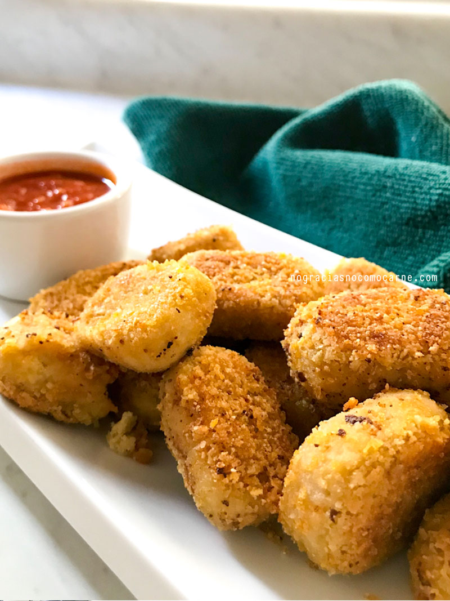
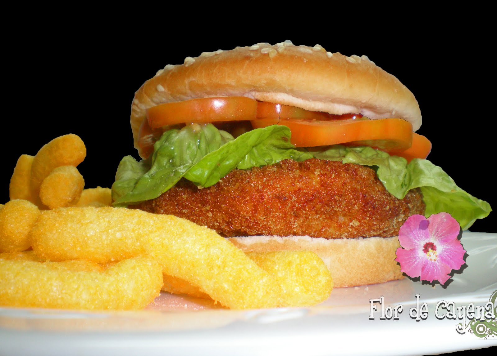
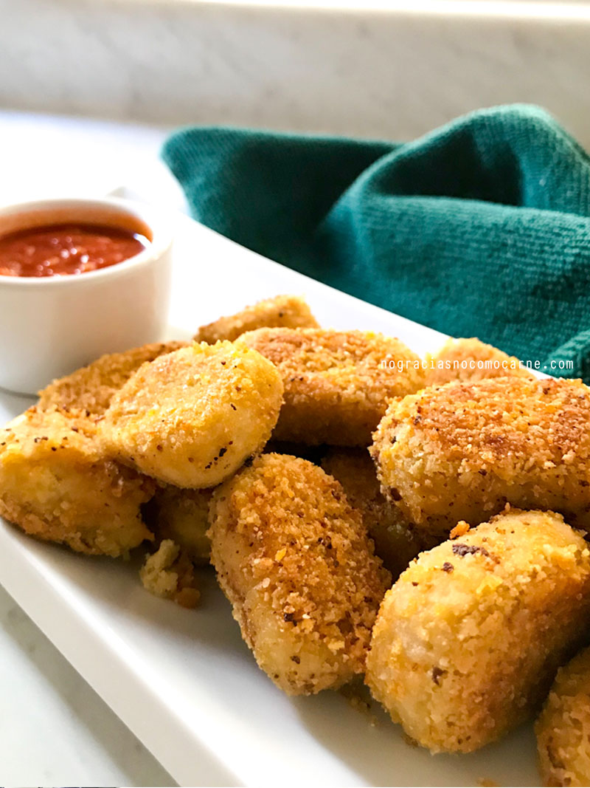
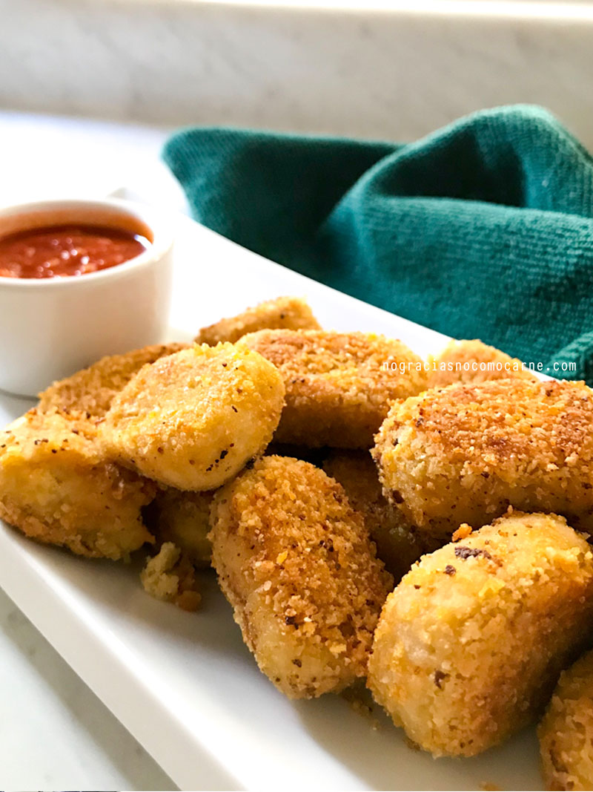
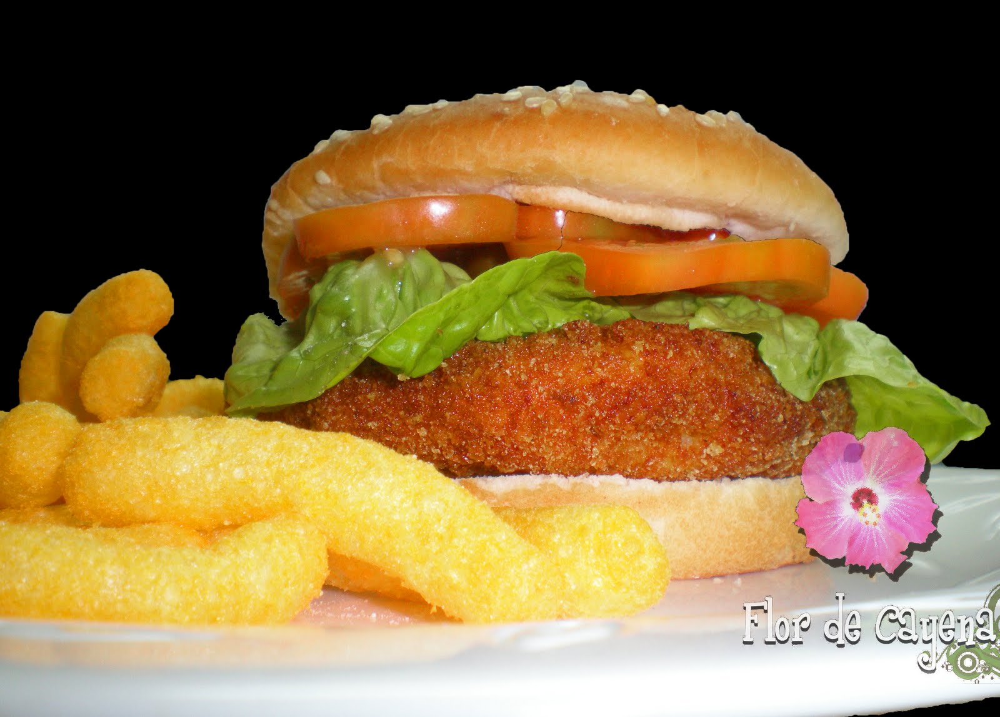
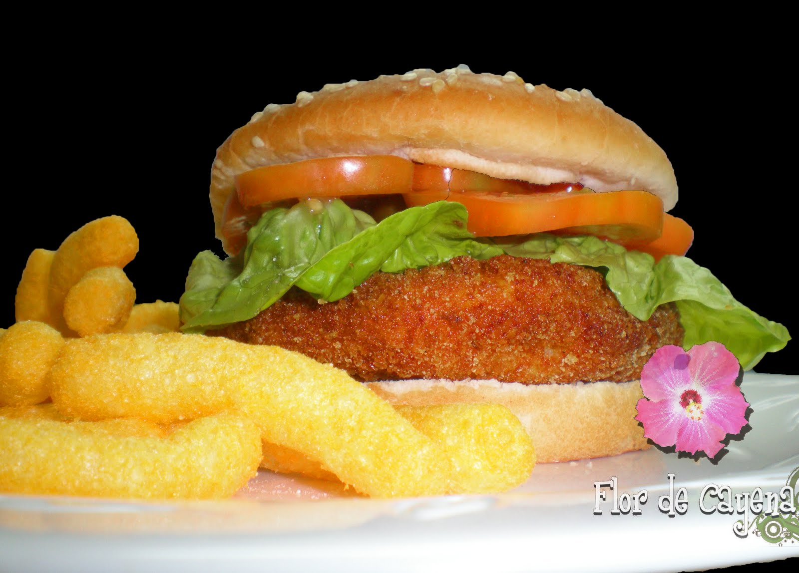

Aquí les dejamos todas nuestras opciones Veganas y Vegetarianas de las cuales disponemos en Hamburguesería Bajo Locus
Los siguientes botones, ocultan o muestran las opciones Veganas o Vegetarianas de nuestra web, los botones tienen doble funcionalidad, o bien muestran las opciones si están ocultas, o bien ocultan las opciones si estas están visibles. No se pueden ocultar ambas opciones (opciones veganas y vegetarianas), si desea ocultar la otra opción, debe de mostrar primero la opción contraria y ocultar la que desee.
Hamburguesa Vegana
Seas vegano o no, debes de probar nuestra hamburguesa vegana, la hamburguesa, esta hecha de zanahoria y betabel añadiendole, lechuga, cebolla, chips de patata y el toque maestro, aguacate, además de nuestra salsa de yogur vegano.

Nuggets Veganos
¿Es posible hacer unos nuggets veganos? La respuesta es si, nuggets hechos con garbanzos, harina de avena y cereal de hojuelas de maiz (10 unidades)
Aros de Cebolla con Salsa ULTRA Picante
Si amais los aros de cebolla y amais el picante, estos aros de cebolla son lo mejor que habreis probado, pocos os atrevereis a probarlos por su intenso picante. (8 unidades)

Hamburguesa Burguer CangreBurguer
La auténtica receta del Crustaceo Crujiente, una hamburguesa de merluza y gambas peladas mezcladas entre sí, con pepinillos, lechuga y tomate y la famosa salsa secreta (mostaza, mayones y ketchup)

 

 
